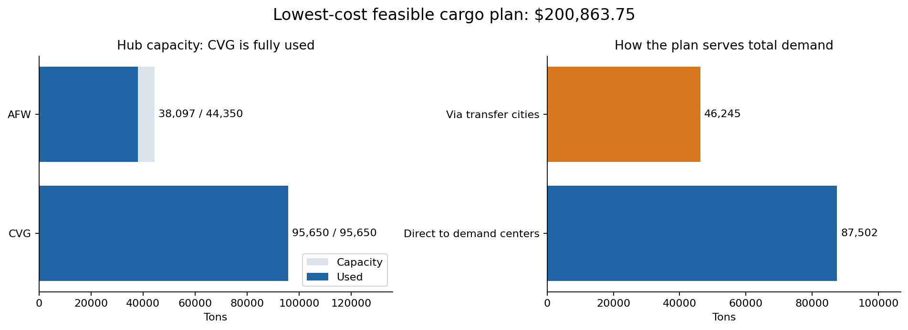

Business question
How should cargo move through a multi-node network to satisfy demand at minimum modeled shipping cost?
Approach
How the work was done
- Represented shipment quantities across hubs, focus cities, and downstream demand centers as decision variables.
- Minimized total shipping cost while enforcing hub capacity, focus-city processing capacity, demand satisfaction, flow balance, and non-negativity.
- Solved the model with PuLP and checked each saved flow against the network constraints.
Results
What the analysis shows
- The solver returned an optimal modeled cost of $200,863.75.
- CVG was fully utilized at 95,650 tons; AFW carried 38,097 of 44,350 available tons.
- Saved verification outputs show hub, focus-city, demand, and flow-balance constraints were satisfied.
From the project
Capacity use and shipment routing

The solved shipping plan
The plan serves 133,747 tons across 65 demand centers. CVG is fully used and AFW has 6,253 tons available. The notebook separately verifies hub limits, transfer flow balance and every destination requirement.
Business relevance
What this makes easier to decide
The model gives planners a costed feasible routing baseline for comparing network decisions. The total is the optimization result under the stated model inputs and constraints.